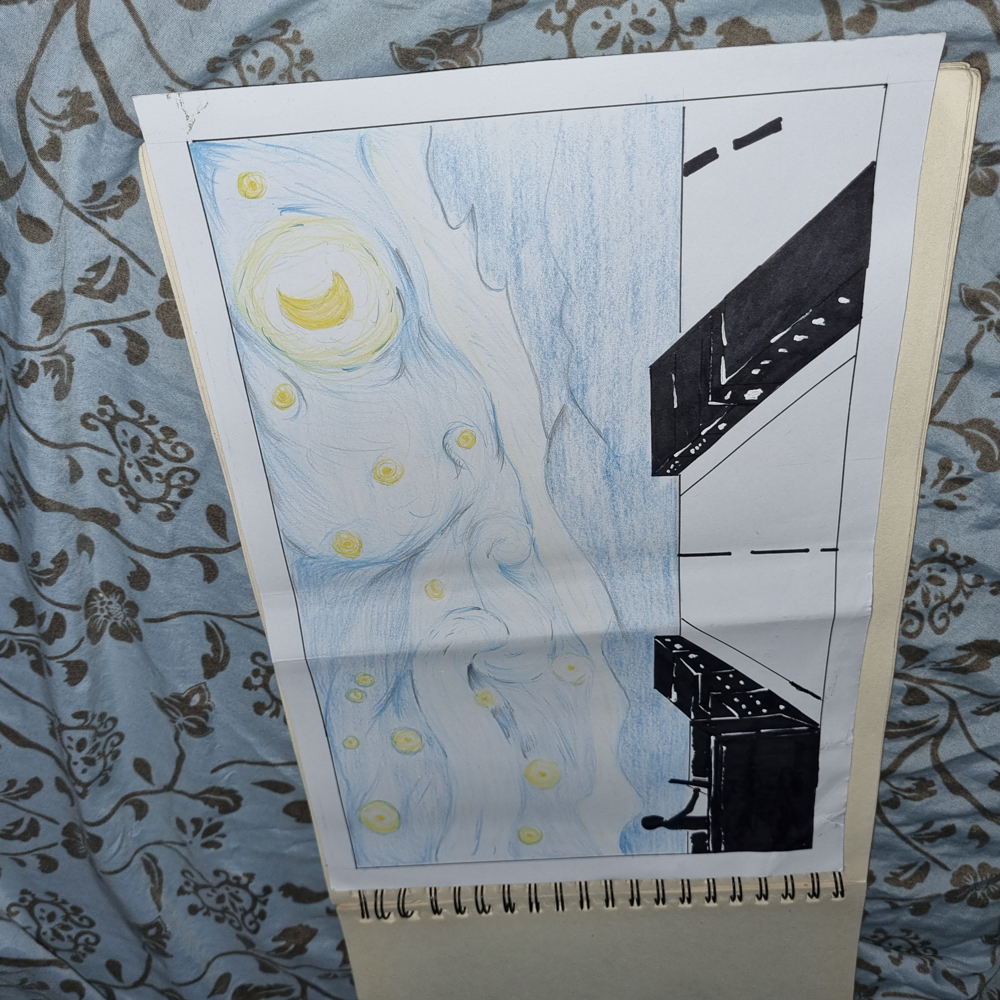
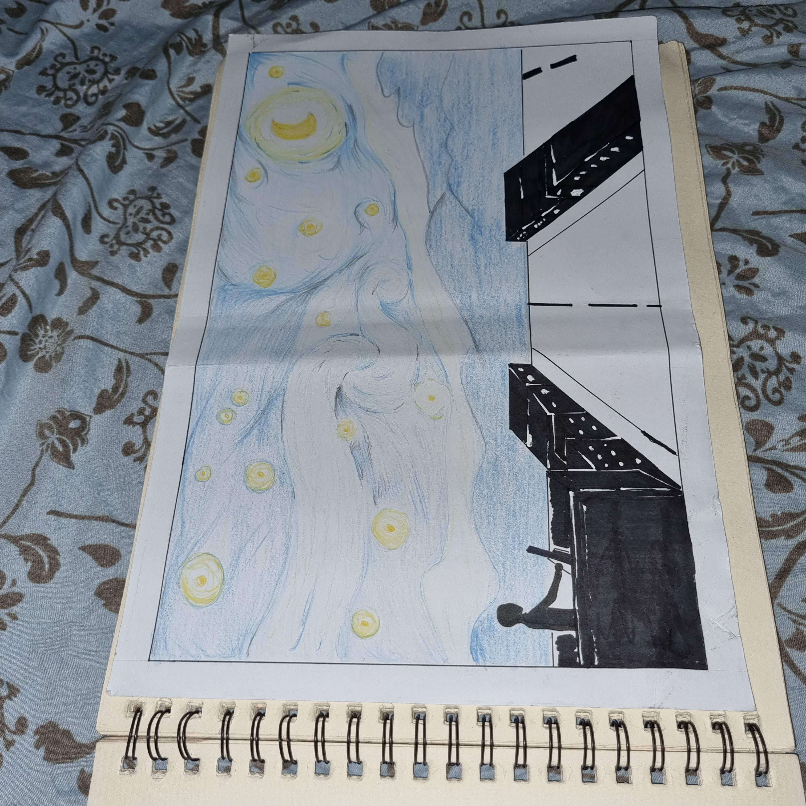
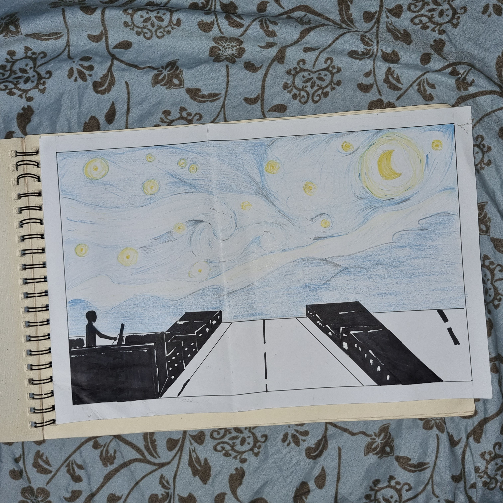
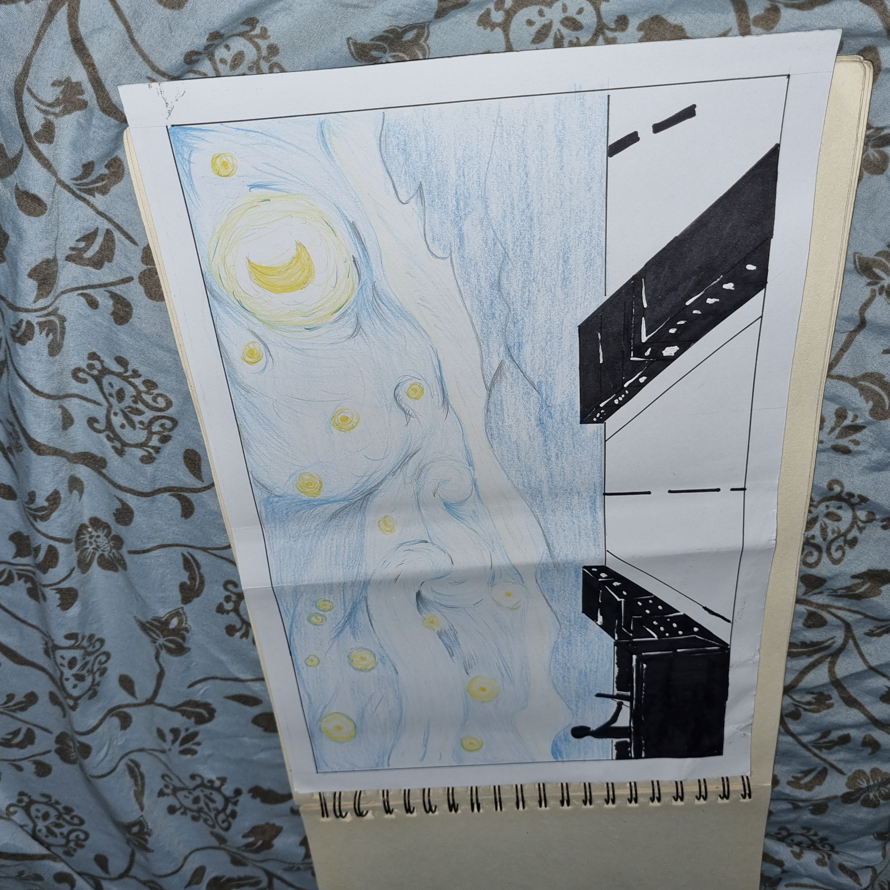
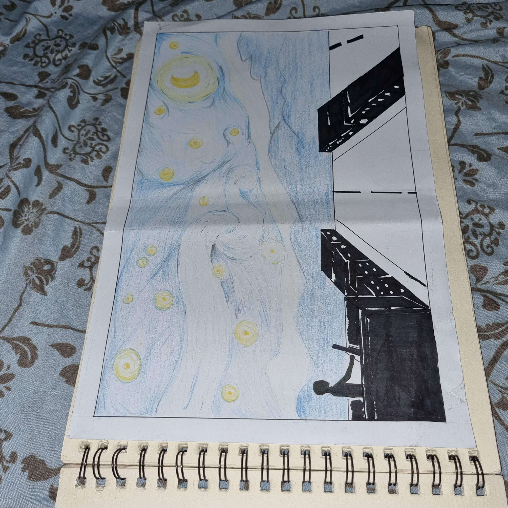
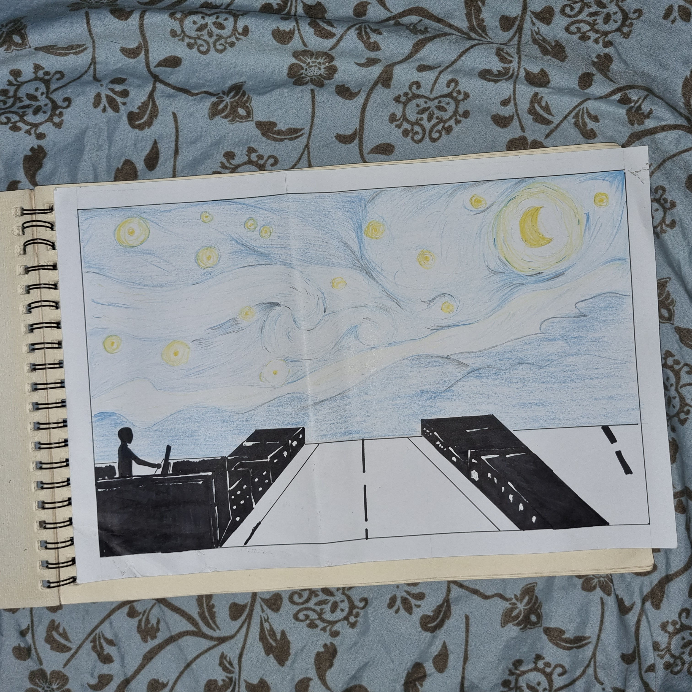

It is all about a boy who loves the artworks of Van Gogh. He wanted to creat his own style just like Van Gogh do to his artworks. This artwork representing the imagination world of the artist. In the boy's P.O.V he see the night of the city, but his imagination creating a good and beautiful art. Just like Van Gogh when he drew his famous Starry Night